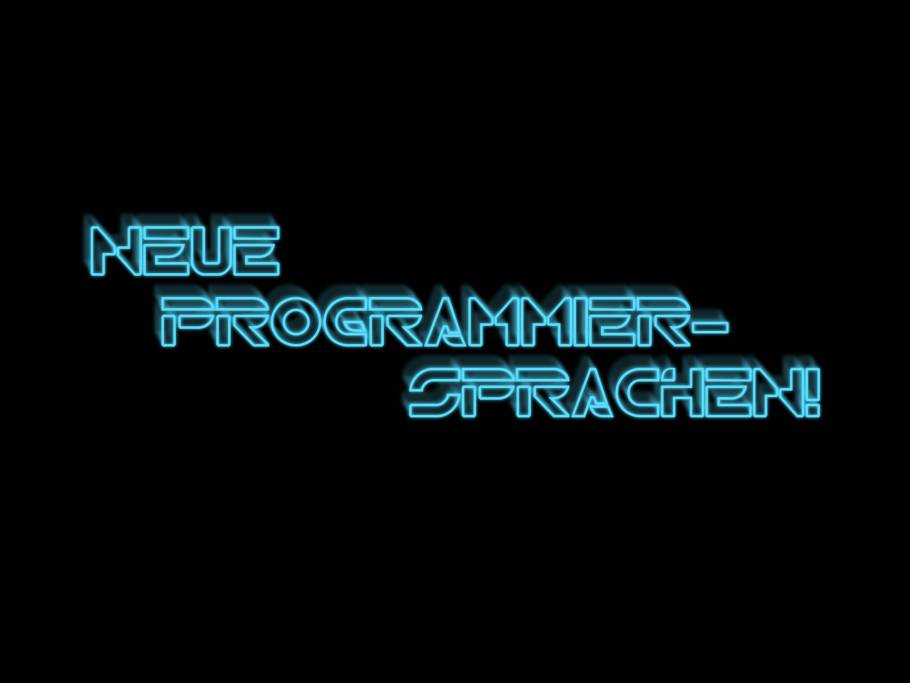

Geekige Weihnachtstage
Was tun außer Plätzchenessen
L33t H4x0r-Tools (doh!)
Warning
Try this at home... only at home
Backtrack - Live CD
Live-CD mit unglaublichen Mengen an Tools
Laut Wikipedia ist scheinbar einer der Autoren Teilhaber der „Finfisher“-Firma (wäre stimmig mit der Aussage von Heise, FinFisher würde auf Backtrack beruhen)... you have been warned ;-)
Eine Menge cooles (neues?) Spielzeug
Metasploit - das „Schweizer Taschenmesser“ des Pentestings
BeEF - warum XSS-Lücken immer schlimm sind
subterfuge - Man-in-the-Middle Point-and-Click
...
„Opfer“-Systeme
Spätestens hier: Vorsicht, nicht direkt ans Netz hängen :-)
Klassiker: Metasploitable
Vorteil: Hierfür gibt es reichlich Dokumentation und Tutorials
...oder eine alte Windows-CD
(ok, das ist dann wie kleine Kinder schlagen)
(ist aber trotzdem lustig)
Einrichtung von VirtualBox
Kaum jemand hat drei Rechner „übrig“: Virtuelle Maschinen
VMs sollen sich gegenseitig sehen, aber nicht das Internet erreichen
- Einrichtung eines Host-Only-Interfaces vboxnet0 (File/Preferences/Network)
- Netzwerkeinstellungen aller VMs: Host-Only, Interface vboxnet0
- Kommunikation mit Host-System: Interface vboxnet0 manuell konfigurieren
Metasploit
Umfassendes Pentesting und Exploit Tool
Ursprungsidee: Exploits werden aus Komponenten kombiniert:
- Der eigentliche Exploit
- Payload (was ausgeführt wird)
- Obfuscation, IDS prevention, etc.
...das ganze modular und einfach erweiterbar.
Metasploit
Gewachsen zu einem umfassenden Pentesting-Tool:
- Verwaltung von Payload-Verbindungen (Meterpreter Shells)
- „Tunneln“ von Metasploit durch einen gePWNten Rechner (Pivoting)
- Integration diverser Tools (Scanner, Fuzzer)
- Protokollierungsmöglichkeiten
- Uvm.
BeEF: Browser Exploitation Framework
Webanwendung: Liefert „Hook“ und Management-Konsole aus
Hook auf fremde Seite „einbauen“ (XSS, modifizierte Webseite, etc.)
Modular aufgebaut, einfach erweiterbar
Skriptbar über REST-API
Subterfuge
Weboberfläche für diverse SSL-MitM-Tools
Unter der Haube: „Alte Bekannte“ wie SSLStrip, etc.
Wieder Metasploit-Integrationsmöglichkeit ;-)
Sprachen lernen!
Programmierspiele
Spielend lernen durch Programmierspiele :-)
Idee: Motivation durch konkretes Projekt, Wettstreit mit anderen
Klassiker: Core Wars (beschrieben im Scientific American 1984), eigener Assembler-Dialekt
Heute: In verschiedenen Hoch- und Skriptsprachen
Robocode
Plattformen: JVM, .net
Ziel: Gegnerische Roboter ausschalten
Modi: 1:1, Gruppenkampf, etc. - es gibt laufende Ligen
Roboter = Radar + Fahrwerk + Kanone
Aktionen:
- Radar/Kanone/Fahrwerk drehen
- Vorwärts/rückwärts fahren
- Kanone abfeuern
Spielfeld nicht diskret, Limitierungen durch Spielphysik
My first robot
Viel Doku im Robo-Wiki
Für nicht-Java-Sprachen: Entsprechende Libraries zum Classpath von Robowars hinzufügen
Compile-Ergebnis: Directory unter Options/Preferences/Development Options aufnehmen
public class MyFirstRobot extends Robot {
@Override
public void run() {
setAdjustRadarForGunTurn(false);
while (true) {
turnGunLeft(10.0);
}
}
@Override
public void onScannedRobot(ScannedRobotEvent event) {
fire(1.0);
}
}Scalatron
Speziell zum Erlernen von Scala
Vorteil: „All in one“, keine separate IDE nötig
Ziel: Möglichst viel Energie sammeln
Bots und Mini-Bots: Steuerbare Entitäten
- Bots können Mini-Bots spawnen
- Übertragen dabei eine gewisse Energiemenge
- Mini-Bots benötigen stetig Energie
Fluppets und Snorgs: Gute und böse Tiere (bewegen sich, erhöhen/reduzieren Energie)
Zugars und Toxifera: Gute und böse Pflanzen
Spielfeld diskret, begrenzte Sichtweite der Bots/Minibots
Scalatron
Kommunikation mit Textprotokoll:
Command(key=value,...)|Command(...)|...
Kommandos:
- Move(direction=dx:dy)
- Spawn(direction=dx:dy,name=string,energy=int,...)
- Set(key=value,...) (werden mit React mitübergeben)
- Explode(size=int) (nur Mini-Bots)
- „Debugging-Tools” Log, Say, Status, MarkCell, ...
Infos:
- Welcome, Goodbye (mit Statusinfos)
- React (Infos über Umgebung, Energiepegel, Kollisionsereignis, etc.)
Hardware für Programmierer
Wieviele Programmierer braucht man, um eine Glühbirne zu wechseln?
Ein Programmierer würde nie etwas anfassen, das mit Hardware zu tun hat.
Der Arduino!
Open-Source-Hardware- und Software-Plattform für Physical Computing
ATmega-CPU, typisch 32 kB Flash, 2 kb RAM
Verschiedenste Versionen und Nachbauten
Boot Loader zum Flashen von Software via USB
„Robuste“ Bauteile verzeihen Fehler und Ungenauigkeiten
Rapid Prototyping für alle möglichen Ideen in Hardware
...und eine Reihe Seelenverwandter
Arduino-Variationen und ähnliche Plattformen:
- Tinkerforge (Schwerpunkt Module)
- Smartduino (Arduino stärker modularisiert, Modul-Bus)
- Teensyduino (Arduino mit USB HCI)
- LilyPad (Arduino speziell für Wearable Computing)
- ...
„Breadboard“ statt Löten
Stecken von Kabeln und Bauteilen
Breadboard erzeugt Kontakte
Ermöglicht schnelles und einfaches Ausprobieren
Shields - für komplexere Erweiterungen
Aufstecken auf Arduino-Board
Für Software: Meist zugehörige Library
Großes Ökosystem an Anbietern
Makey Makey
Noch weniger Hardwarekontakt!
(Video bei Youtube)
Meldet sich als USB-Tastatur.
Arduino-basiert, kann programmiert werden.
Ideen: Build Server Status Traffic Lights


Software in C
Arduino-IDE vereinfacht Cross-Kompilierung und Upload
Alternative Eclipse-IDE
...oder auf die Kommandozeilen-Tools zugreifen (gcc)
Statt main(int,char**): setup() und loop()
int ledPin1 = 13;
void setup() {
// Initialisierung
pinMode(ledPin1, OUTPUT);
}
void loop() {
// Ausführung in Endlosschleife
digitalWrite(ledPin1, HIGH);
delay(500);
digitalWrite(ledPin1, LOW);
delay(500);
}
Frohe Weihnachten!
Bildnachweise
- arduino.jpg robives CC BY-NC-SA
- breadboard.jpg eagletusk CC BY
- froheweihnachten.jpg simmogl CC BY-NC
- h4x0rt00lz.jpg brianklug CC BY-NC
- lightbulb.jpg topguy CC-BY-NC-SA
- shields1.jpg, shields2.jpg tronixstuff CC BY-NC-SA
- title.jpg rickenharp CC BY-NC
- warning.jpg pearsongraphics CC BY-NC-ND
- Logos und Screenshots: Von den entsprechenden Projektseiten
- Arduino-Projektbeispiele: Von den verlinkten Seiten
This work is licensed under a Creative Commons Attribution-NonCommercial-ShareAlike 3.0 Unported License.